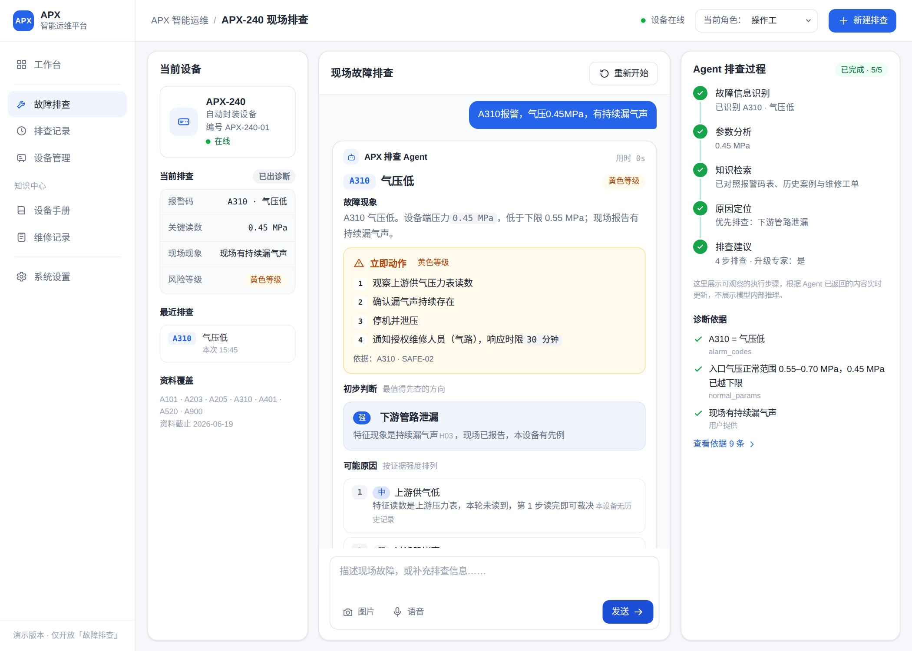

制造设备故障排查
高频、耗时，而且高度依赖经验。
现有资料：设备说明书、历史案例、维修工单
输入报警码、设备参数或现场现象，
给出可能原因、证据来源和排查顺序。

正常范围 0.55–0.70 MPa
01为什么是这个问题
高频、耗时，而且高度依赖经验。
现有资料：设备说明书、历史案例、维修工单
现场现象不同，原因可能不同。
例：A310 气压低。有持续漏气声，是下游接头松动；没有漏气声，是气源滤芯堵塞。
AI 不只要答对，还要知道什么时候停下来，交给人处理。
例：A205 热封温度过高，必须先停机，再由授权人员处理。
02现场演示
三个场景，都在真实工作台里运行。
场景 01 · A310 低压报警
03我怎么做的
我把说明书、历史案例、维修记录，整理成排查时必须遵守的规则。
规则写在 Agent 的提示词里；模型没有做额外训练。
04怎么改到能用
安全规则 SAFE-01，总在不该出现的场景里被引用。
同一个问题改了两次还复发，说明我修的可能不是根因。
9轮回归测试 —项问题已关闭 50项前端自动化检查
05落地
维修结果进入记录，下一次同类故障可以直接复用。
升级通知、复机审批、维修记录，都可以放在飞书里完成，不用另建一套系统。
文字、照片、语音
给出原因和证据来源
排查步骤和停机条件
写明通知谁、多久响应
自动推送飞书消息
复机检查标准
飞书审批签字
自动写入多维表格
资料在多维表格维护
维修结果自动回流
05值不值得做
试点阶段只看四个指标
先测真实结果，再谈 ROI。
06边界
提示词约 2.4 万字，每次都要完整传入。
下一步：缓存提示词，或按报警码拆成小规则。
同一份资料存在原始表格、多维表格、提示词三处。
下一步：只保留多维表格这一个来源。
如果明天去见这家工厂，我会先问三个问题
这台设备一次非计划停机，成本是多少？
从报修到工程师到场，平均需要多久？
设备手册最后一次更新，是什么时候？
前两个决定这个方案值不值得做，
第三个决定它能不能长期运行。
飞书 FDE 实习生作业 06 · 设备资料来自虚构考试材料《APX-240 自动封装设备说明书》